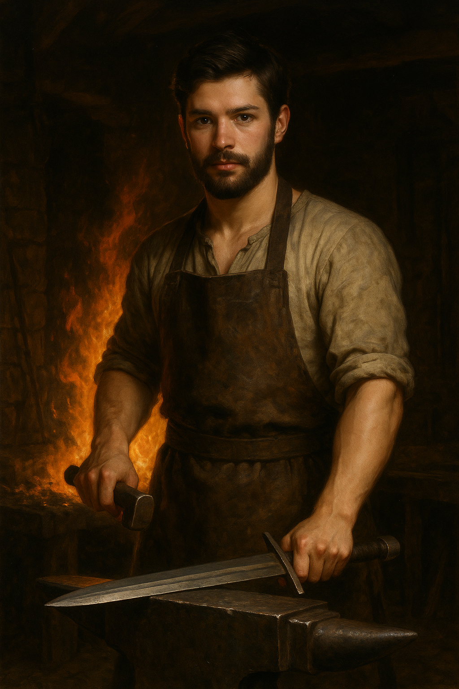

Thomel of Redhearth
Thomel shapes fire and metal into survival, an ironsmith whose craft is the heartbeat of Redhearth.
- Species: Human (Planet Edson)
- Status: Ironsmith
- Era / Locale: Ancient Edson Era (~ -10,000 AE) / Redhearth

Thomel- Master Ironsmith, Artisan Weaponsmith
Relationship with Merra:
Merra is a resident of Redhearth who initially admires Vear, but as her feelings go unreturned, she finds solace and growing affection in Thomel’s steady presence. Their relationship develops slowly amid the hardships of ancient survival.Personality and Traits:
- Age: 31
- Focused, introspective, and deeply respectful of forging traditions passed down through generations
- Believes forging is as much a spiritual act as a technical one
- Loyal to his community and committed to crafting tools and weapons that embody hope and strength
- Quiet and deliberate, often humming old forging chants or mantras
Role in the Story:
Thomel forges the visor for Vear after Vear is blinded in battle. This helm serves both as practical protection and a sacred
symbol of endurance and leadership in a world still shaped by raw elemental forces.